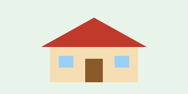

Animales en el refugio
Actualmente se atienden 24 animales: 12 perros, 9 gatos y 3 ejemplares de fauna silvestre.
Sistema de Control de Rescate y Adopción Animal
Esta plataforma permite registrar, consultar y dar seguimiento a los animales rescatados por el refugio, facilitando su posterior adopción responsable.

Actualmente se atienden 24 animales: 12 perros, 9 gatos y 3 ejemplares de fauna silvestre.
Hay 4 casos que requieren atención médica inmediata.
En lo que va del mes se han concretado 6 adopciones.